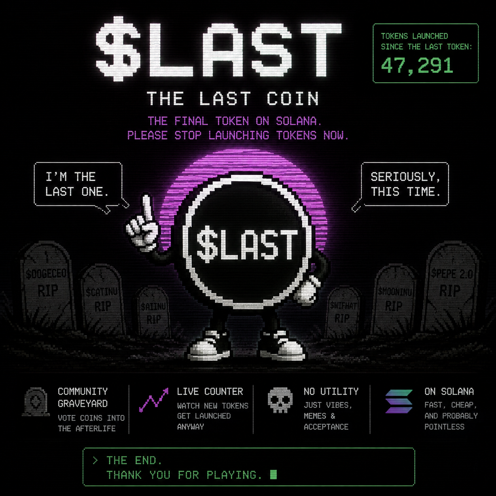

RIP
$EXAMPLE
BORN 11:03 UTC
ATH $742,183
LAST SEEN 16:41 UTC
CAUSE Nobody knew what it did.
FINAL NOTICE // SOLANA
So naturally, we made one more.
$LAST is the final token on Solana. Everyone launching another token after this is ignoring a very clear request.

LIVE-ish COUNTER
Demo counter. Connect a real data source before presenting this as live on-chain data.
AND COUNTING...
WHY?
Dogs. Cats. Frogs. Presidents. AI agents. Presidents who are AI agents. Dogs wearing hats. Cats wearing different hats.
We have enough tokens.
So we launched one more.
COMMUNITY ARCHIVE
A memorial for launches that came before us. Comedic internet archaeology only — no harassment or unsupported allegations.
BORN 11:03 UTC
ATH $742,183
LAST SEEN 16:41 UTC
CAUSE Nobody knew what it did.
TOKEN $DOGWITHHAT
SPECIES DOG
HAT DETECTED YES
NECESSARY NO
ANOTHER TOKEN HAS BEEN LAUNCHED.
ROADMAP REPLACED BY
Done. This was our first mistake.
Announcement issued. Compliance: poor.
Already ahead of schedule.
Emotionally in progress.
The cemetery remains open.
> checking solana...
> searching for unnecessary tokens...
> ERROR: too many results
> mission_success_rate = 0.00%
> community_status = "still here"
> █
READ THIS PART
$LAST is a meme token and internet experiment. It is not a promise of profit, guaranteed appreciation, or guaranteed income.
A community meme and recurring joke built around one impossible mission: stop new token launches.
A guaranteed investment return, fake AI product, magical yield machine, or excuse to hide allocations and fees.
Replace this with the actual creator allocation, creator wallet, LaunchLab fee settings, and official contract address.
CRYPTO DIDN'T NEED ANOTHER TOKEN.
> THE END. THANK YOU FOR PLAYING.